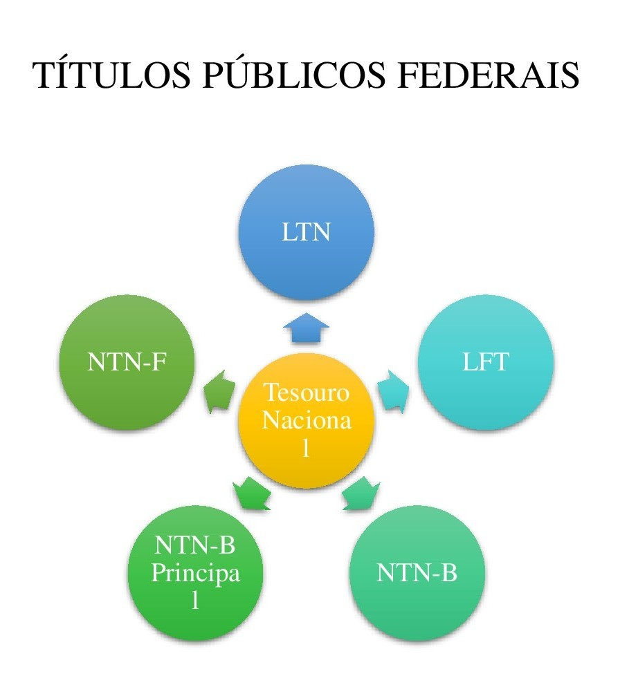

Investimentos: Como Fazer Seu Dinheiro Trabalhar Para Você
Introdução aos Investimentos
Investir não precisa ser complicado. Com o conhecimento certo e as ferramentas adequadas, qualquer pessoa pode aprender a investir e melhorar sua saúde financeira.
Os investimentos podem ser a chave para alcançar a liberdade financeira e garantir um futuro mais tranquilo. Aqui, vamos explorar os principais tipos de investimentos e como você pode começar a investir com segurança.
Principais Tipos de Investimentos
Ações
As ações representam uma parte do capital social de uma empresa. Ao comprar ações, você se torna sócio da empresa e tem direito a parte dos lucros (dividendos).
Saiba mais sobre AçõesTítulos Públicos
Os títulos públicos são emitidos pelo governo para financiar suas atividades. Eles são considerados investimentos de baixo risco e podem ser uma boa opção para iniciantes.
 Saiba mais sobre Títulos PúblicosFundos Imobiliários
Os Fundos Imobiliários (FII) permitem que você invista em imóveis sem precisar comprá-los fisicamente. Uma opção para quem busca diversificação.
Saiba mais sobre Fundos ImobiliáriosComo Começar a Investir?
Investir é um processo simples, mas exige disciplina. Aqui estão alguns passos para começar:
- 1. Defina seus objetivos financeiros: Antes de começar a investir, é importante saber o que você quer alcançar.
- 2. Escolha sua estratégia de investimentos: Existem várias formas de investir. Escolha a que mais se adapta ao seu perfil.
- 3. Diversifique seus investimentos: Não coloque todos os ovos na mesma cesta. Diversificar é essencial para reduzir os riscos.
- 4. Acompanhe o mercado: Acompanhe o desempenho dos seus investimentos e as tendências do mercado.
Entendendo o Risco nos Investimentos
Todo investimento envolve algum grau de risco. Saber como gerenciar esses riscos é fundamental para proteger seu dinheiro.
O risco varia dependendo do tipo de investimento. Alguns são mais arriscados, como ações, enquanto outros, como títulos públicos, são mais seguros.
Perguntas Frequentes
1. Quanto eu preciso para começar a investir?
Você pode começar a investir com pequenas quantias. Muitos investimentos têm valores acessíveis, como Tesouro Direto e Fundos Imobiliários.
2. O que é o Tesouro Direto?
O Tesouro Direto é uma forma de investir em títulos públicos de baixo risco. É uma das opções mais acessíveis para quem quer começar a investir.